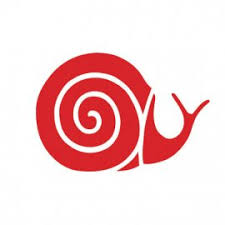
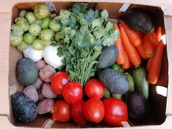
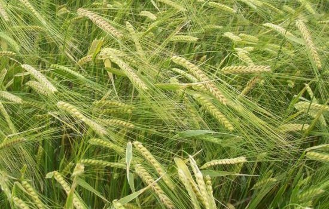
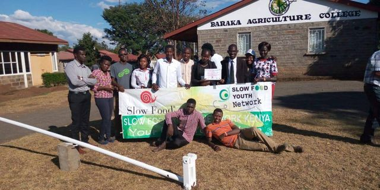
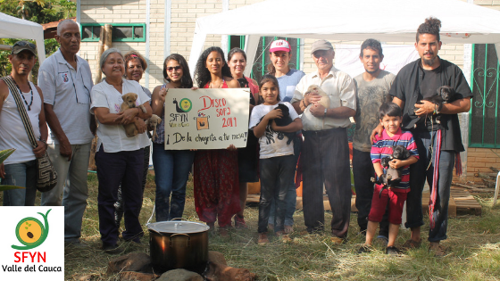
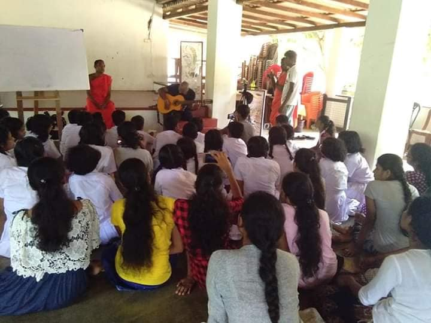
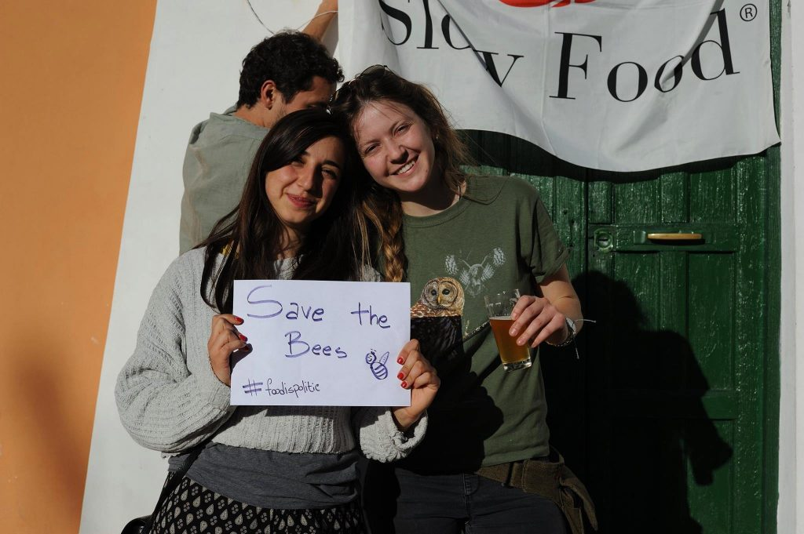
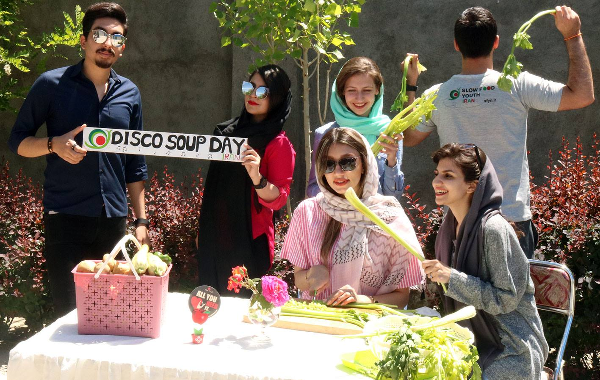
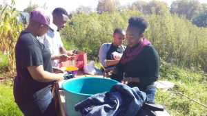
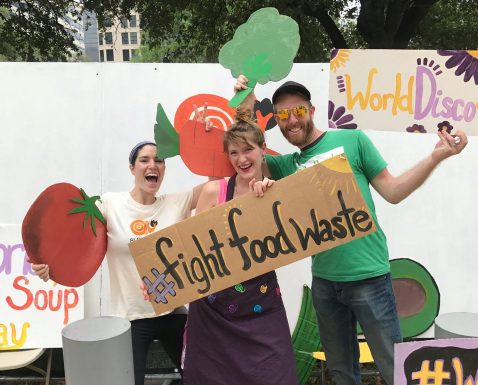

Slow Food International

I am very passionate about food, it makes me happy. But many things about the world of food also make me sad: how it is produced, how it is treated. How it is used, how it is abused. Who gets access to it. And who doesn't.
But Slow Food is one organisation I have found that gives me hope and optimism. It has also opened up a whole network of inspiring people to me. People all around the world doing great things, in many different ways.
Please browse below some of the articles I have written for Slow Food International and the Slow Food Youth Network.
.jpg) A Living Seed Bank: One man's dream to safeguard Nepal's food future
A Living Seed Bank: One man's dream to safeguard Nepal's food future
Slow Food International
Traditionally, farmers in Nepal have grown an amazing array of food crops. But today they are dangerously reliant on an increasingly smaller range of monocrops. One man has a plan to help change that.

Slow Food Youth Network continues to push for a better food system throughout the coronavirus pandemic
Slow Food Youth Network
Following the outbreak of the COVID-19 pandemic, much of the world was brought to a sudden halt. However, many Slow Food Youth Network (SFYN) communities around the world have continued to be more active than ever.

Orkney Bere: The Ancient Grain that Keeps on Giving
Slow Food International
The revival of Orkney bere, once banished from bannock recipes to the backbench behind modern barley, continues to go from strength to strength.
 Slow Fish Melbourne Keeps the Conversation About Sustainable Seafood Going
Slow Fish Melbourne Keeps the Conversation About Sustainable Seafood Going
Slow Food International
The Slow Fish Melbourne Festival sprung up largely in response to one particular event and its consequences: the Victorian state government’s 2014 decision to close down commercial net fishing. But 5 years later, the festival has grown into a crucial platform for airing concerns and confronting the many problems surrounding Australian fisheries.
 Tushuri Guda: Better Times Ahead for One of Georgia's Oldest, Most Abused Cheeses?
Tushuri Guda: Better Times Ahead for One of Georgia's Oldest, Most Abused Cheeses?
Slow Food International
Small-scale cheesemakers in Georgia have had a hard time competing with big dairy. But one special cheese is managing to fight back.
 Tinker, Teacher, Soldier, SRI: The Farmer Leading the Way Towards Malaysia’s Organic Future
Tinker, Teacher, Soldier, SRI: The Farmer Leading the Way Towards Malaysia’s Organic Future
Slow Food International
It is the only certified organic rice farm in Malaysia. But the man who started it hopes that this will not be the case for long.

SFYN Africa Leading the Conversation on Safeguarding the Future of Agriculture
Slow Food Youth Network

Preserve our roots; protect our future: #FoodisSOVEREIGNTY in Latin America
Slow Food Youth Network

SFYN Asia campaigning to protect biodiversity.
Slow Food Youth Network

Go Vote! Young Europeans want a brighter food future
Slow Food Youth Network

World Disco Soup Day 2019 Preview: It’s almost time for the Slow Food Youth Network’s (SFYN) biggest coordinated effort to fight against food waste and climate change.
Slow Food Youth Network

World Disco Soup Day 2019 Recap: An Inclusive-Holistic Approach to Fighting Food Waste
Slow Food Youth Network

World Disco Soup Day 2018 Recap: How 20 tonnes of food waste made people and the planet happy for a day!
Slow Food Youth Network